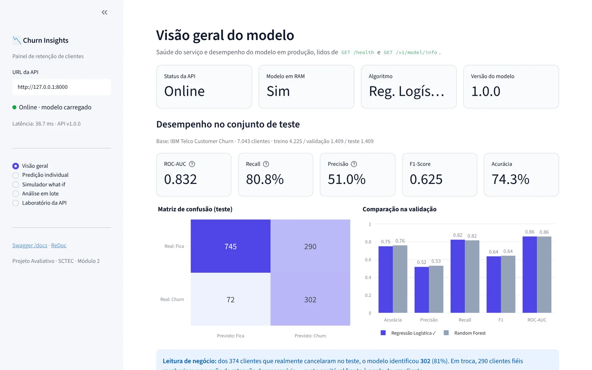

Teste o modelo e a API agora
O mesmo modelo treinado em Python roda aqui, exportado para JavaScript (diferença de 0,0000000000000003 nos 7.043 clientes da base). As chamadas passam por uma réplica da API FastAPI, com as mesmas rotas, validações e status codes. Se a API Python estiver rodando, você pode ligar nela.
Mude qualquer campo e a predição é refeita na hora, via POST /v1/predict em FastAPI simulada no navegador.
Escolha uma variável e veja como o risco muda, mantendo o resto do perfil igual. Todos os cenários vão em uma única chamada POST /v1/predict/batch.
Envie um CSV no formato da base Telco ou use a amostra de 300 clientes reais. O arquivo é dividido em lotes de 100 (limite da API). Nada sai do seu computador no modo navegador.
customerID e Churn são opcionais.Distribuição das probabilidades
Clientes por faixa de risco
Risco médio por contrato
Risco médio por pagamento
Clientes prioritários para retenção
Monte qualquer requisição, edite o JSON à vontade e veja a resposta exata da API: 200 sucesso, 400 regra de negócio, 422 validação do Pydantic, 404/405 rota ou método errado.
Bateria de testes
| Clique em "Executar os 12 cenários" para testar todos os status codes. |
Como ligar a demo na API Python de verdade
Rode a API no seu computador e escolha API FastAPI real no topo da demo. A API já libera CORS para este site.
cd churn-api
uvicorn app.main:app --reload
# depois: "API FastAPI real" → http://127.0.0.1:8000 → ConectarAlguns navegadores pedem permissão para um site público acessar a rede local. Se a conexão falhar, abra o site localmente (por exemplo python -m http.server 5500 na pasta do site).
Perder um cliente custa mais caro do que mantê-lo
Uma operadora de telecom precisa saber quem está prestes a cancelar para agir a tempo, com desconto, mudança de plano ou suporte. Sem isso, a retenção é feita às cegas, ou depois que o cliente já saiu.
Objetivo do sistema
- Receber os dados de um cliente via API REST
- Devolver a probabilidade de churn e uma faixa de risco (baixo, médio, alto)
- Oferecer um painel visual para o time de retenção priorizar contatos
Pipeline de dados e treinamento
Pré-processamento e modelo salvos juntos em um único arquivo. A API recebe dados crus e o pipeline faz o resto.
7.043 linhas
texto → número
estratificada
one-hot · escala
Random Forest
.joblib
Decisões técnicas
- Imputação dentro do pipeline, depois da divisão: evita vazamento de dados do teste para o treino.
OneHotEncoder(handle_unknown="ignore"): uma categoria nova em produção não derruba a API.
class_weight="balanced"compensa o desbalanceamento (só 26,5% de churn).- Validação escolhe, teste mede: o conjunto de teste só é usado uma vez, no final.
1.409 clientes que o modelo nunca viu
Métricas no conjunto de teste, com o modelo escolhido (Regressão Logística).
Matriz de confusão
Leitura de negócio
- Dos 374 clientes que realmente cancelaram, o modelo encontrou 302 (81%).
- O custo: 290 clientes fiéis recebem uma oferta sem precisar, o que é bem mais barato do que perder um cliente.
- Por que Regressão Logística? Empatou com o Random Forest na validação (ROC-AUC 0,859 × 0,859), mas é mais simples, leve (~9 KB) e interpretável. É isso que permite mostrar, na demo, quais fatores mais pesaram em cada predição.
Camadas com responsabilidades separadas
Cada camada tem uma função só. Isso deixa o código testável e permite trocar o modelo sem mexer nas rotas.
FastAPI · app/
recebem a requisição HTTP e devolvem o status code
predict.py · health.pyPydantic valida tipos e limites → 422 se inválido
churn.pyregras de negócio (→ 400) e inferência
model_service.pycarregado 1 vez no lifespan, guardado em app.state
churn_pipeline.joblibjoblib.load.Endpoints e status codes semânticos
Cada erro tem o seu código, e a API não cai: mesmo uma falha inesperada volta como JSON. Experimente todos no Laboratório da API.
| Rota | Função |
|---|---|
| GET /health | Serviço de pé? Modelo na RAM? |
| POST /v1/predict | Predição de 1 cliente |
| POST /v1/predict/batch | Predição de 1 a 100 clientes |
| GET /v1/model/info | Métricas do modelo em produção |
| Código | Quando acontece |
|---|---|
| 200 | Predição feita com sucesso |
| 400 | Tipos certos, combinação incoerente |
| 422 | Tipo errado, campo faltando ou extra |
| 500 | Falha inesperada (tratada, não cai) |
| 503 | Modelo não carregado |
Exemplo de resposta
{
"churn_prediction": true,
"churn_probability": 0.8865,
"risk_level": "alto",
"model_version": "1.0.0"
}400 × 422 na prática
"tenure": "dez"→ 422: o Pydantic barra antes de chegar ao modelo.- Sem internet, mas com streaming → 400: os tipos são válidos, mas a regra de negócio foi violada.
extra="forbid": um campo desconhecido no JSON também gera 422.
Churn Insights: a versão em Python
O painel original em Streamlit, que conversa com a API FastAPI só por HTTP. A demo no topo desta página reproduz as mesmas funções no navegador.

Como rodar e como o código foi versionado
O modelo treinado já vem no repositório. Para treinar de novo, use python training/train_model.py.
# 1. ambiente
git clone https://github.com/JorgeRodrigues2026/churn-api.git
cd churn-api
python -m venv .venv
pip install -r requirements.txt
# 2. API → localhost:8000/docs
uvicorn app.main:app --reload
# 3. dashboard → localhost:8501 (outro terminal)
streamlit run dashboard/app.py
# 4. testes
pytest -vGitFlow
Cada fase em sua própria branch, com commits pequenos e merge via Pull Request para a develop. A main recebe a versão final.
O que aprendi
- Um modelo só gera valor quando vira um serviço que outros sistemas consomem.
- Validar na entrada (Pydantic) é mais barato do que depurar uma predição errada.
- Separar camadas deixa o código testável e facilita trocar o modelo.
- A métrica certa depende do negócio: aqui, o recall pesa mais do que a acurácia.
O que vem depois
- Ajustar o limiar de decisão pelo custo real de uma ação de retenção.
- Explicar cada predição com SHAP (a demo já mostra a versão com coeficientes).
- Versionar modelos com MLflow e monitorar o drift dos dados.
- Empacotar em Docker e publicar a API em nuvem.